User Guide
A shared task list for this server — create, organise, complete and delete tasks from any browser, with nothing to install.
| Application | To Do — shared task list |
|---|---|
| Address | http://172.26.6.118 |
| Audience | Anyone using or administering the list |
| Sign-in required | No — the list is shared and unauthenticated |
| Supported browsers | Any current browser; works with JavaScript disabled |
| Guide version | 1.0 · 27 July 2026 |
The app has no accounts, passwords or per-user separation. Everyone who can reach the address above sees and edits the same list, and deletions are permanent and immediate. Treat it as a shared whiteboard rather than a private notebook.
/appThere is nothing to install and no account to create. If you can reach the address, you can use the list.
Open a browser and go to http://172.26.6.118. You'll land
straight on your task list — the bare address redirects to
/tasks automatically, so either form works.
| What you want | Where to go |
|---|---|
| The task list | /tasks |
| A blank new-task form | /tasks/create |
| The mobile app | /app |
| This guide | /guide |
| The JSON API | /api/tasks |
This address is reachable from inside the hosting network, not from the open internet. If the page doesn't load, see Troubleshooting — it's almost always a network permission rather than a fault in the app.
Everything happens from this one screen. It's the page you land on, and every action returns you to it.
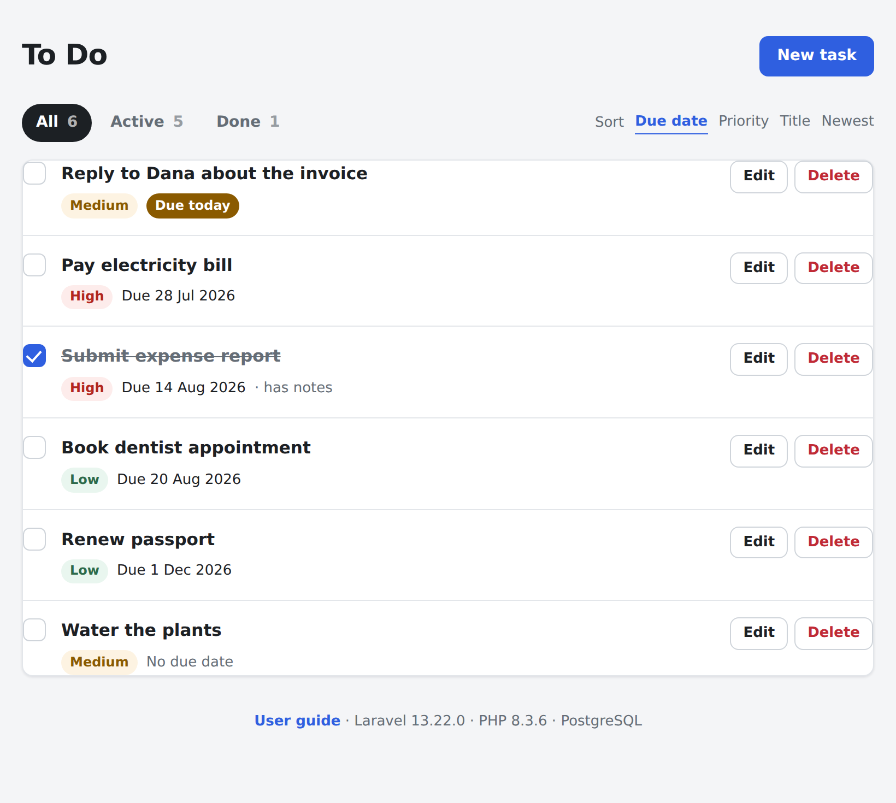
Each row packs everything you need to judge a task at a glance, plus its controls:
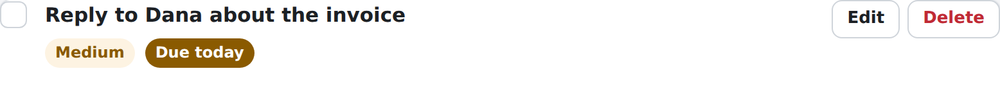
A first-time list shows Nothing here yet with a button to add your first task. If a filter is hiding everything instead, you'll see No active tasks (or No done tasks) with a link back to the full list — so an empty screen is never a dead end.
Only the title is required. Everything else can be filled in later, or never.
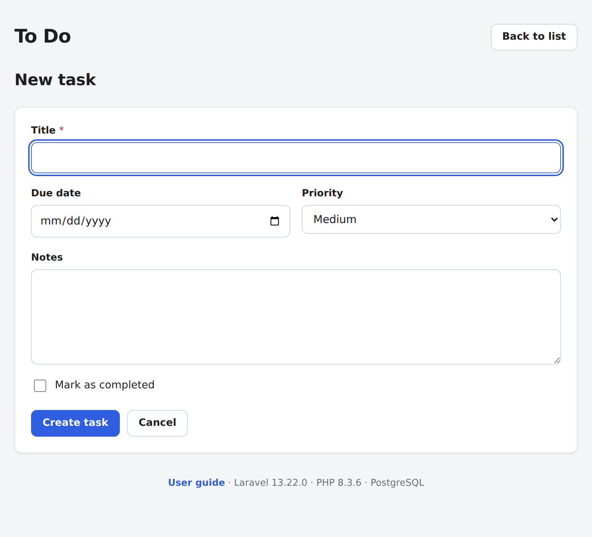
| Field | Required | What it does |
|---|---|---|
| Title | Yes | The task itself, up to 255 characters. This is what shows in the list, so keep it short and specific. |
| Due date | No | Drives the overdue and due-today badges, and the default sort. Leave blank for tasks with no deadline — they show No due date. The date box is supplied by your browser, so its layout follows your own regional settings and may not match the screenshot; the date is stored and displayed the same way regardless. |
| Priority | No | Low, Medium or High. Defaults to Medium. Shown as a coloured badge on every row. |
| Notes | No | Longer detail, up to 5,000 characters — links, context, a checklist. Rows with notes show a has notes marker. |
| Mark as completed | No | Files the task as already done on creation. Useful for logging something you finished before writing it down. |
The app checks your input and explains any problem next to the field that caused it. Crucially, nothing you typed is lost — the form comes back with your work still in it, so you only fix the one field.
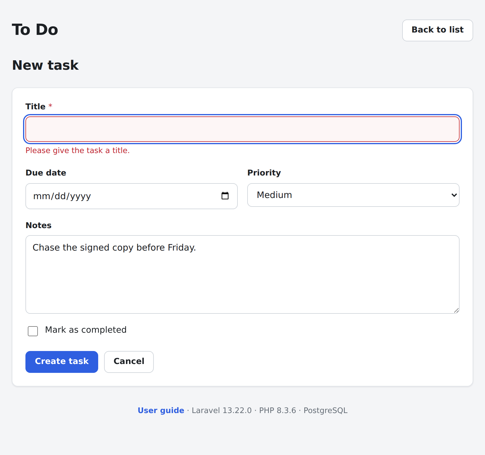
One click, no dialogs, no save button.
Click the circle at the left of any row. The task is immediately marked complete: its title is struck through, the row dims, and the app records the exact time you finished it. Click the circle again to reopen the task — that timestamp is cleared, and the task returns to normal.
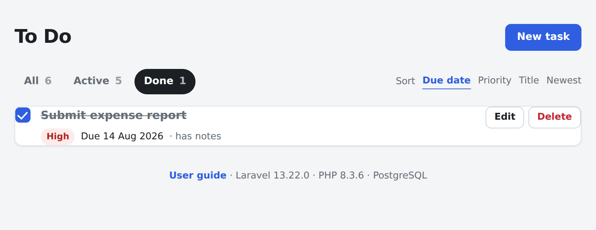
Completing a task keeps you exactly where you were — same filter, same sort order. If you're working through the Active tab, the finished task simply drops out of view and you carry on down the list.
You can also complete a task from its detail page, or by ticking Mark as completed on the edit form — all three routes do the same thing.
The list shows a summary. The detail page shows everything.
Click any task's title to open its own page. This is where to read long notes, which the list only hints at with a has notes marker.
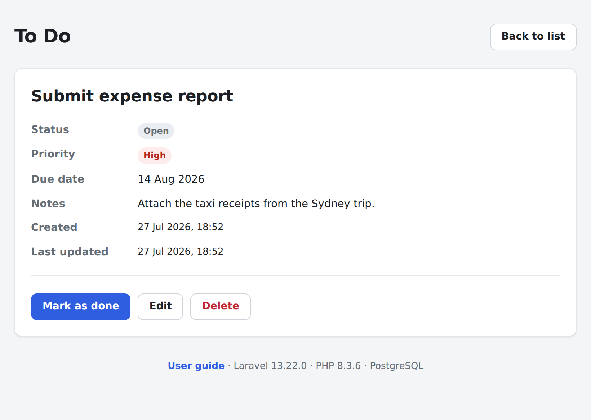
Two things appear here that the list doesn't show: the Created and Last updated timestamps, and — for finished tasks — the exact date and time it was completed. Back to list at the top right returns you to the list.
Any field, any time.
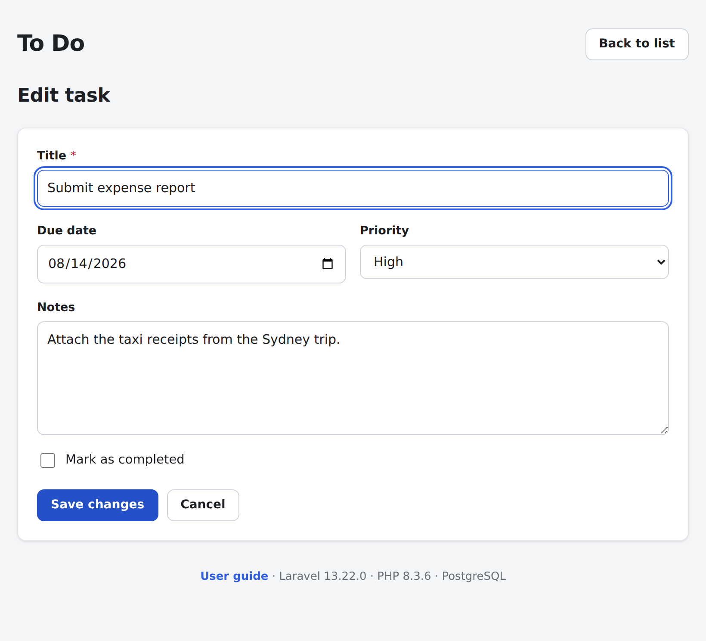
Editing is a safe way to reorganise: raise a priority as a deadline approaches, push a due date back a week, or paste in the context you didn't have when you first jotted the task down.
Deletion is permanent. There is no archive, no bin, and no undo.
Once confirmed, the task and its notes are gone for good — the confirmation box is the only safety net. If you might want the task later, complete it instead of deleting it: finished tasks stay on the Done tab indefinitely, out of your way but fully recoverable with one click.
Because the list is shared, a task you delete disappears for everyone. Completing is almost always the better habit.
Filters change which tasks you see. Sorting changes the order. They work together.
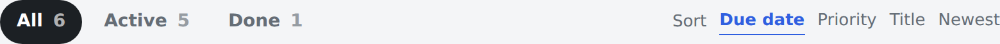
| Tab | Shows |
|---|---|
| All | Every task, finished or not. |
| Active | Only unfinished tasks — the day-to-day view. |
| Done | Only completed tasks, as a record of what's been finished. |
The number beside each tab is a live count, so you can see how much is outstanding without switching tabs. Active and Done always sum to All.
| Option | Orders by | Best for |
|---|---|---|
| Due date | Soonest deadline first; undated tasks last | Working to deadlines — this is the default |
| Priority | High, then Medium, then Low | Deciding what matters most today |
| Title | Alphabetical, A to Z | Finding a specific task by name |
| Newest | Most recently created first | Reviewing what was just added |
The filter and sort you pick are part of the page address, so
/tasks?filter=active&sort=priority — active tasks, most
important first — can be bookmarked or sent to a colleague, and it opens
exactly as you left it.
Every coloured label in the list, and what it's telling you.
| Badge | Meaning |
|---|---|
| High | High priority. Sorts to the top under Priority. |
| Medium | Medium priority — the default for a new task. |
| Low | Low priority. Worth doing, not worth worrying about. |
| Overdue · 28 Jul 2026 | The due date has passed and the task isn't finished. Shown in red with the date, so it can't be missed. |
| Due today | Due today and still open. |
| Due 20 Aug 2026 | A future deadline — plain grey text rather than a badge, because it needs no attention yet. |
| No due date | No deadline set. These sort to the bottom under Due date. |
| · has notes | The task carries notes. Open it to read them. |
Overdue and due-today badges are worked out fresh each time the page loads, so a task becomes visibly overdue on its own — you never have to re-save anything to keep the list honest.
The same page adapts to the screen and to your system appearance settings. There is no separate mobile app or setting to find.
The layout rearranges rather than shrinking: filter tabs spread across the full width, sorting moves onto its own line, and each task's Edit and Delete buttons drop below its badges so they stay comfortably tappable. Nothing is hidden, and there's no sideways scrolling.
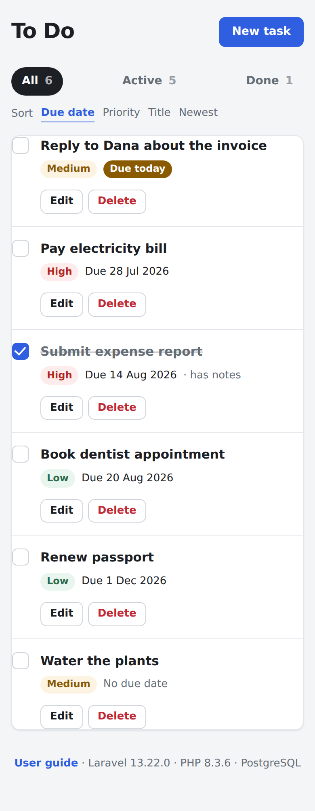
If your device is set to a dark appearance, the app follows it automatically — no toggle to hunt for. Badge colours are re-tuned rather than simply inverted, so priorities stay just as easy to read.
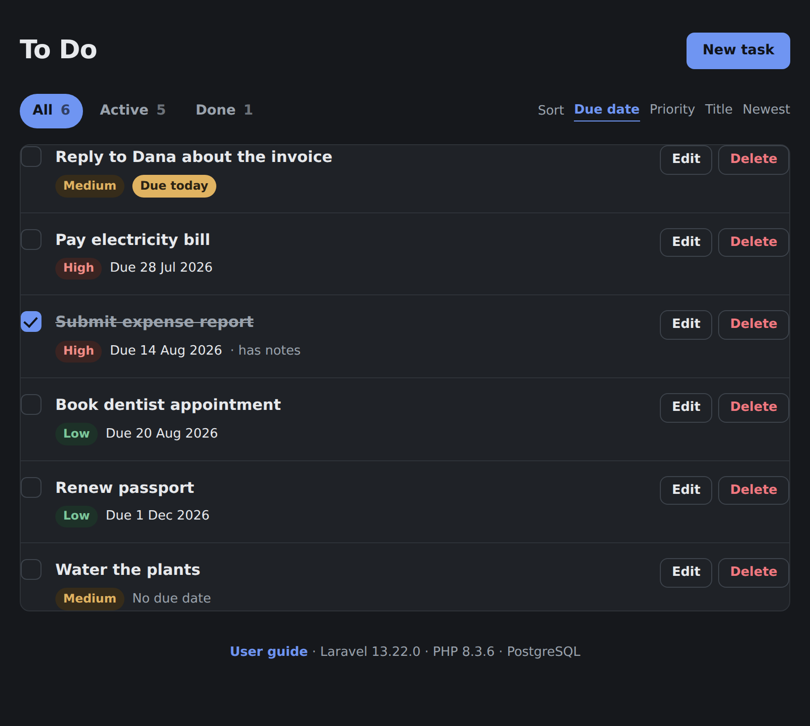
Every core action — creating, editing, completing and deleting — is a plain form submission. The app remains fully usable in locked-down browsers with JavaScript switched off. The only thing you lose is the confirmation box before a delete, which means deletion happens immediately. Take extra care in that case.
A second, phone-first way into the same list. Built with
Ionic, it runs in your browser at /app — there is nothing to
install from an app store.
Open http://172.26.6.118/app. It shows the same tasks as the
main site because it reads and writes the same database through the app's
JSON API (Section 14). A change made in one shows up in
the other as soon as you reload.
| Which one should I use? | |
|---|---|
The main site/tasks |
Best on a desktop. Shows more per row, has a dedicated detail page per task, and works with JavaScript disabled. |
The mobile app/app |
Best on a phone. Native-feeling controls, swipe-to-delete, pull-to-refresh, and it can be added to your home screen. Requires JavaScript. |
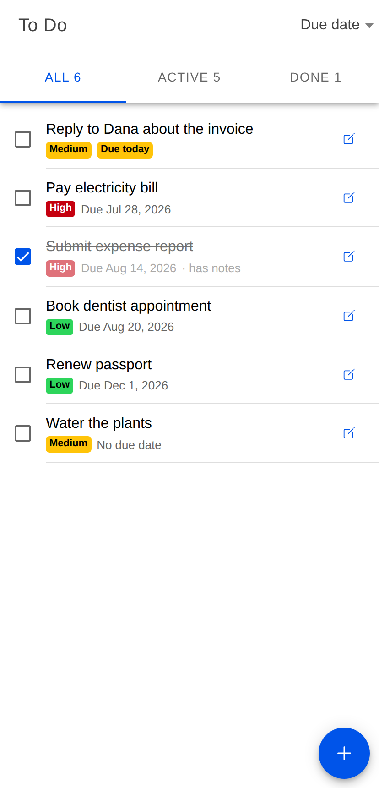
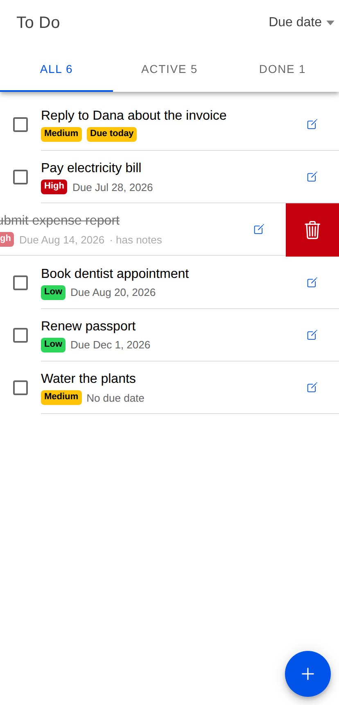
Tap + for a new task, or the pencil to change an existing one. The same fields appear as on the main site, and the same rules apply: only the title is required. If the server rejects something, the message appears under the offending field and nothing you typed is cleared.
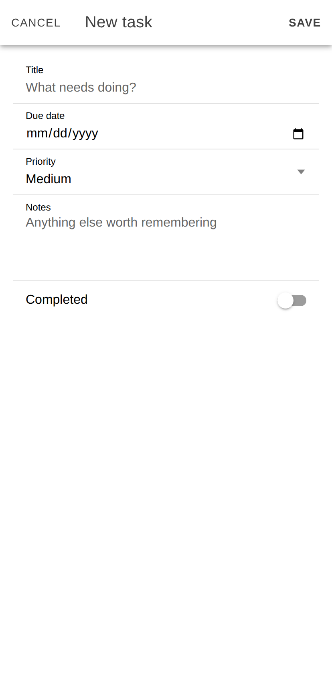
Like the main site, the app follows your device's light or dark setting automatically. On a phone you can use your browser's Add to Home Screen option to launch it full-screen from an icon, which makes it behave much like an installed app — while still being served from this server.
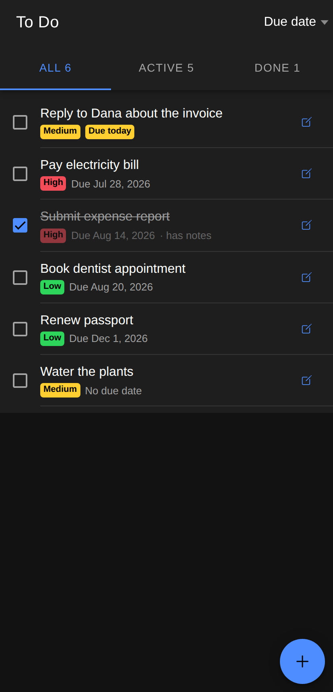
The app formats due dates using your device's own regional settings, so they may read Aug 14, 2026 or 14 Aug 2026 depending on where you are. It's the same underlying date either way.
| Symptom | What to do |
|---|---|
| The page won't load at all | You're most likely outside the network permitted to reach the
server. Confirm you're on the hosting network or VPN, and check
the address is exactly http://172.26.6.118 — note
http, not https. If colleagues on the
same network can reach it, the app is fine and the problem is
your connection. |
| The page loads but looks unstyled | The stylesheet didn't load. Force a refresh with Ctrl+F5 (Cmd+Shift+R on a Mac). If it persists, tell your administrator — see Section 13. |
| The mobile app is stuck on grey placeholder rows | It's waiting on the API and hasn't got an answer. Pull down to
refresh. If it stays that way, check the main site at
/tasks still loads — if that works and the app
doesn't, tell your administrator; if neither works, it's the
network. |
| The mobile app shows a red error message | The message comes straight from the server. Could not reach the server means a connection problem — pull down to retry. Anything else names the specific field or task that was refused. |
| The app and the main site disagree | Neither updates itself when someone else makes a change. Pull down to refresh the app, or reload the main site. Whatever is in the database wins. |
| “Page expired” when saving | The form sat open too long and its security token lapsed. Go back, reload the page, and re-enter your change. Nothing was saved, and nothing was damaged. |
| My task vanished | Check the All tab first — you may be on Active and the task may have been completed. If it isn't under All, someone deleted it, and it cannot be recovered. |
| A task I didn't create appeared | Expected. The list is shared by everyone who can reach the server — there are no private lists. |
| My change was overwritten | Two people edited the same task at once; the last save wins. For anything contentious, agree who owns a task rather than relying on the app to arbitrate. |
| “Not found” on a task page | The task was deleted after your page loaded, or the address
is mistyped. Return to /tasks. |
A short reference for whoever keeps this running.
| Item | Detail |
|---|---|
| Application root | /var/www/todo |
| Served by | nginx on port 80 → php-fpm 8.3 |
| Framework | Laravel 13.22.0 on PHP 8.3.6 |
| Database | PostgreSQL 16, database todo_app,
role todo_user on 127.0.0.1:5432 |
| Task data | A single tasks table |
| Config file | /var/www/todo/.env — mode 640,
owner ubuntu:www-data |
| Logs | /var/www/todo/storage/logs/ and
/var/log/nginx/todo-*.log |
| This guide | /var/www/todo/public/guide/ |
| JSON API | Routes in routes/api.php,
controller App\Http\Controllers\Api\TaskApiController,
JSON shape in App\Http\Resources\TaskResource |
| Mobile app source | /home/ubuntu/ionic-todo —
Ionic 8 + React 19 + Vite; npm run build |
| Mobile app build | /var/www/todo/public/app/ —
compiled output only; never edit it directly |
The app has no authentication whatsoever. Anyone who can reach port 80 has full read, edit and delete rights over every task. Put authentication in front of it before exposing it to a wider network or the public internet.
.env, run php artisan config:cache
or the change won't take effect./var/www/todo/crud_test.sh exercises it over HTTP, and
/home/ubuntu/e2e/run.sh drives a real browser. Run both
after any change.public/app/ does nothing, because they're compiled
output:
cd /home/ubuntu/ionic-todo
npm run build
sudo cp -r dist/. /var/www/todo/public/app/bootstrap/app.php rather than by
artisan install:api, which would add Sanctum to an app
that has no authentication. Run php artisan route:cache
after changing routes/api.php./app-dev:
cd /home/ubuntu/ionic-todo
npx ionic serve --host=0.0.0.0 --port=8100 --no-open/app-dev is the live dev server and /app is
always the compiled build, so a dev session can never take the working
app offline. The dev server proxies /api to Laravel on
port 80; without that its task list would come up empty. It is a
development tool — leave /app as the URL you share.A developer reference. This is what the mobile app talks to, and it's available to any other client you want to write.
| Base URL | http://172.26.6.118/api |
|---|---|
| Format | JSON in, JSON out. Send
Accept: application/json and, for writes,
Content-Type: application/json |
| Authentication | None |
| CSRF token | Not required — these routes are stateless, so
plain fetch() or curl works |
| Rate limit | 180 requests per minute per IP; exceeding it
returns 429 |
Every endpoint below, including DELETE, is open to anyone
who can reach the server. The rate limit is a guard against a runaway
client, not a security control. Do not widen network access to this
server without putting authentication in front of it.
| Endpoint | Does | Success |
|---|---|---|
GET /api/tasks |
List tasks, with filter, sort and paging | 200 |
POST /api/tasks |
Create a task | 201 |
GET /api/tasks/{id} |
Fetch one task | 200 |
PATCH /api/tasks/{id} |
Update the fields you send; omitted fields are left alone
(PUT is accepted and behaves identically) |
200 |
PATCH /api/tasks/{id}/toggle |
Flip done/not-done, letting the server decide the new value | 200 |
DELETE /api/tasks/{id} |
Delete a task, permanently | 204 |
Every endpoint that returns a task returns this same shape, wrapped in a
data key:
{
"data": {
"id": 174,
"title": "Submit expense report",
"notes": "Attach the taxi receipts from the Sydney trip.",
"due_date": "2026-08-14",
"priority": "high",
"is_done": false,
"is_overdue": false,
"is_due_today": false,
"completed_at": null,
"created_at": "2026-07-27T19:51:03+00:00",
"updated_at": "2026-07-27T19:51:03+00:00"
}
}| Field | Type | Notes |
|---|---|---|
id | integer | Read-only |
title | string | Required on create. Max 255 characters, trimmed; whitespace alone is rejected |
notes | string or null | Max 5,000 characters |
due_date | string or null | YYYY-MM-DD. Date only — there is no time component |
priority | string | One of high, medium, low.
Defaults to medium |
is_done | boolean | Defaults to false |
is_overdue | boolean | Read-only, derived. Computed server-side so every client agrees what overdue means |
is_due_today | boolean | Read-only, derived |
completed_at | string or null | Read-only. Set when is_done becomes true and
cleared when it becomes false. Never accepted from a request, so
it can't contradict is_done |
created_at | string | Read-only, ISO 8601 |
updated_at | string | Read-only, ISO 8601 |
Request
curl 'http://172.26.6.118/api/tasks?filter=active&sort=priority' \
-H 'Accept: application/json'| Parameter | Values | Default |
|---|---|---|
filter |
all, active, done |
all |
sort |
due, priority, title,
created |
due |
per_page | 1 to 100 | 25 |
page | Page number | 1 |
An unrecognised filter or sort is ignored and the
default used, rather than returning an error.
Response
{
"data": [ /* task objects */ ],
"meta": {
"filter": "active",
"sort": "priority",
"counts": { "all": 6, "active": 5, "done": 1 },
"page": 1,
"per_page": 25,
"total": 5,
"last_page": 1
},
"links": { "prev": null, "next": null }
}The counts block covers the whole table, not just the current
page, so a client can render filter tabs with counts from this one call.
Create
curl -X POST http://172.26.6.118/api/tasks \
-H 'Content-Type: application/json' -H 'Accept: application/json' \
-d '{"title":"Book the venue","due_date":"2026-09-01","priority":"high"}'Returns 201 with the created task and a Location
header pointing at it. Only title is required.
Update one field
curl -X PATCH http://172.26.6.118/api/tasks/174 \
-H 'Content-Type: application/json' -H 'Accept: application/json' \
-d '{"priority":"low"}'Updates are partial: the example above changes the priority and leaves the
title, notes, due date and done state exactly as they were. This matters —
sending {"title":"x"} will not silently reopen a completed
task.
Complete a task
curl -X PATCH http://172.26.6.118/api/tasks/174/toggle \
-H 'Accept: application/json'Prefer toggle over sending is_done yourself: it
needs no prior read, so two clients can't race on a stale value. It also keeps
completed_at correct automatically.
| Status | Means |
|---|---|
404 | No task with that id |
422 | Validation failed; see the shape below |
429 | Rate limit exceeded — back off and retry |
500 | Server error; check
storage/logs/laravel.log |
A 422 response
{
"message": "Please give the task a title. (and 1 more error)",
"errors": {
"title": ["Please give the task a title."],
"priority": ["Pick a priority of high, medium or low."]
}
}Errors are keyed by field name, which is how the mobile app puts each message under the input that caused it. The messages are the same ones the web forms show, so both surfaces stay consistent.
The API shares the web app's filters, sort keys, validation rules and
completed_at handling by design, so a task created through the
API is indistinguishable from one created through a form. There is no
separate API-only behaviour to learn.